| DWR 是 durable water repellent 的縮寫，直譯就是「耐用的抗水劑」，他是一種用於織品的防水塗料，以防止布料在潮濕或下雨的環境下濕掉。DWR 會隨著衣物穿著與洗滌的次數增加而逐漸耗損，進而使得其防水防潮能力受到影響。別擔心，市面上的防水噴霧就可以為你的衣物重新補充 DWR。 |
|---|
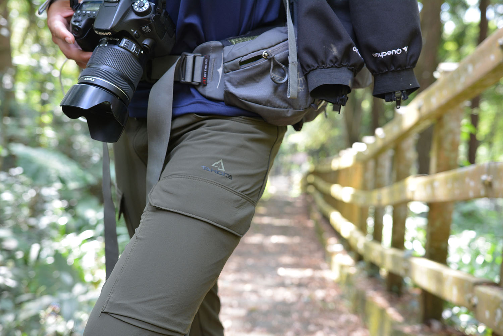
▲ 深綠色版本的 TAKODA 登山褲低調奢華有質感（Alan 阿倫 攝）
這次受到《健行筆記》的邀約，實測這條很有質感的 TAKODA 登山褲，我非常狠心地把它穿去幾近拓荒的「白布帆產業道路廢棄路段」以及惡名昭彰的「穿霧隘勇線」。
【先讓我們來到貝克亞高地】
貝克亞高地位於一塊私人土地上，是我的私房景點，網路上搜尋不到任何資料，一般人也無法隨意進入。位於海拔 50 公尺左右的貝克亞高地有很棒的風景，天氣好時可以遠眺七星山、大屯群峰和觀音山，有時候工作疲憊，我就會到這裡來健行放鬆。
別小看這座鄰近市區的貝克亞高地，他擁有成人胸口高的芒草和大花咸豐草，如果沒有穿一件防護性好的褲子，在穿越草叢的時候肯定會被刺得哇哇叫。正因為貝克亞高地如此特別，我除了到白布帆和穿霧隘勇虐待它之外，為了確保這件有質感的 TAKODA 登山褲確實可以保護我和我的腿周全，我也選擇穿著它來這邊走走，順便簡單測試上頭羅列的性能。
首先在保護的部分，TAKODA 登山褲在屁屁和褲管內側都有特別加強設計。屁股時常會因為在野外亂坐而摩擦到，或有時候下攀時會坐溜滑梯，甚至不小心滑倒都會屁股著地，因此加強了耐磨與保護功能。
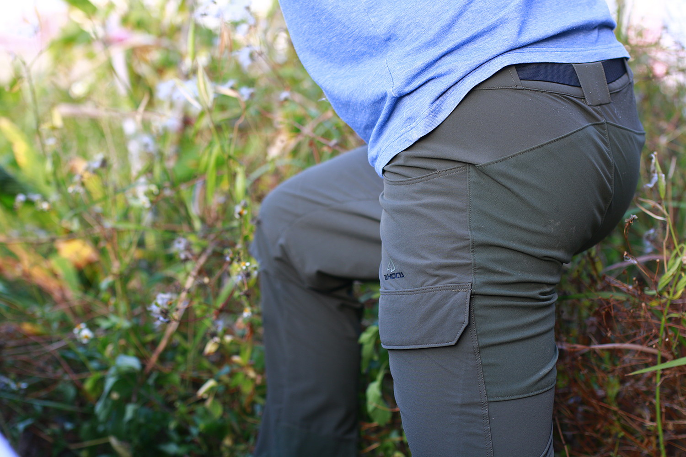
▲ TAKODA 登山褲屁屁後面耐磨強化設計
褲管內側則是可能會在走路時產生摩擦，或是上下攀時磨到石頭及岩壁，因此在這裡也設計了一塊加強措施。
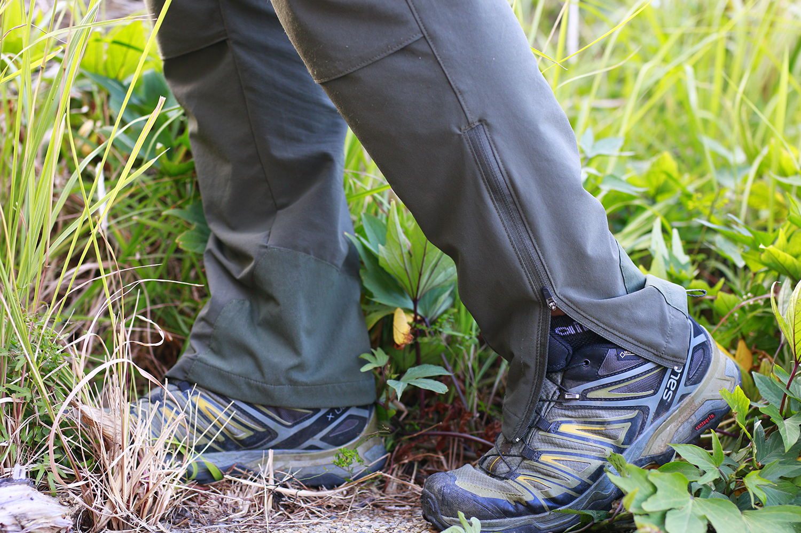
▲ TAKODA 登山褲褲管開口式拉鍊和內側耐磨強化設計
褲頭的部分，TAKODA 登山褲配備調節式鬆緊腰帶，讓褲子與腰部的接觸能夠更服貼，不只能夠增加舒適性，也能夠增加安全性和活動性。調整適當的鬆緊才不會因為太緊而不舒服、或是太鬆而產生滑動甚至磨擦。
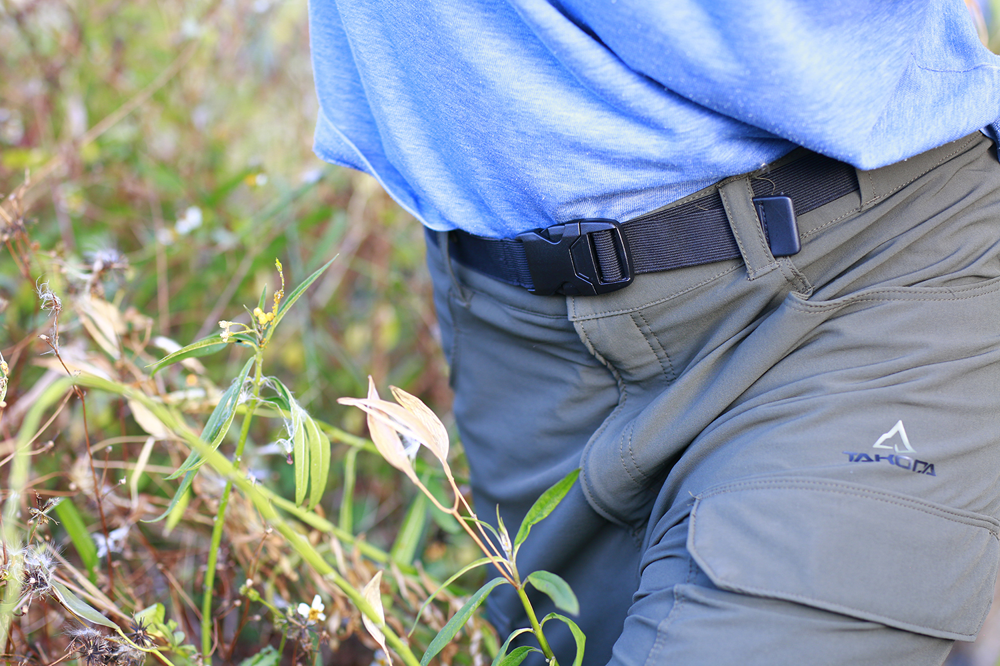
▲ TAKODA 登山褲配備調節式鬆緊褲腰
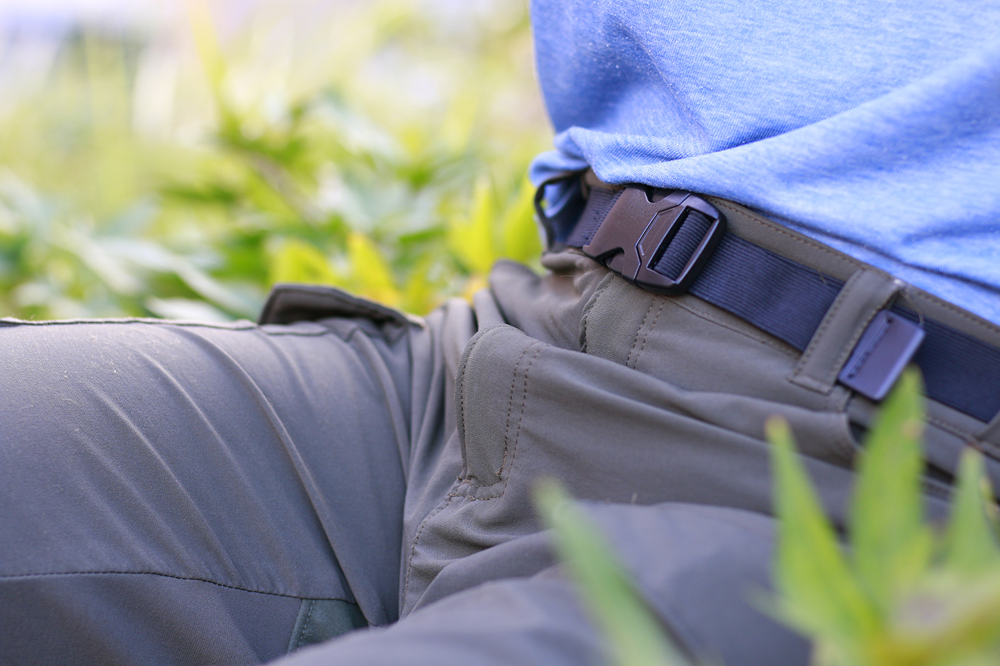
▲ 有了調節式鬆緊褲腰，有小肚肚也不怕束縛
當然，最重要的是當我們登山結束後，常常會開啟大吃大喝模式，結果吃出一層小肚肚，讓褲子變得太緊，有了調節式鬆緊褲腰就再也不用擔心了！
接下來，就讓我們來看看這次前往白布帆和穿霧隘勇線「虐待」TAKODA 登山褲的結果吧！
噢，對了。由於現場的環境比較危險，沒辦法時常要求隊友拍攝精美的照片，因此許多照片是直接用手機拍攝的，或許沒那麼吸引眼球，但我希望大家能夠從我階下來的文字中身歷其境，體會到我穿著 TAKODA 登山褲去探險的感受與心情。Let’s go！
【最嚴厲的實測就是虐待它】
白布帆產業道路（廢棄路段）
自從九二一地震以來，位於苗栗卓蘭的白布帆產業道路有一大段因為崩塌而封閉，後來由於號稱「苗栗南橫公路」的 140 縣道開通，這段路也就從此被遺忘在荒煙漫草中。二十年後的今天，當初廢棄的路段大部分都已經被大自然收回去，動輒兩倍人高的芒草、兩層樓高的崩塌地，路面若不是被掩埋就是隨著路基一起流失，已經看不出來當年道路的樣貌。
這次我從象山沿著挑沙古道進入白布帆產業道路，往白布帆社區的方向前進，一路必須自己在茂密的芒草裡開出路徑，同時還要高繞或下攀崩塌地。
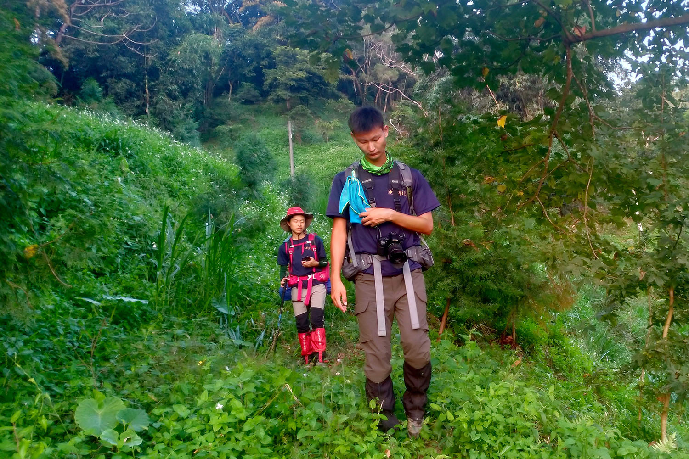
▲ 穿上 TAKODA 登山褲突破廢棄的白布帆產業道路（石恩 攝）
TAKODA 登山褲在這個時候扮演相當重要的角色，它耐磨抗撕裂的特性讓我能夠直接用腿輾壓芒草和樹枝，像坦克一樣直接用身體開出一條路，也能夠在上下攀的時候毫無猶豫地跪在地上，或是用任何姿勢、任何部位固定在岩壁上，不但腳不會因此疼痛或受傷，連褲子也完好無缺。
這件褲子所使用的四向彈性的布料，以及膝部的立體活動剪裁設計，都讓我在上下攀爬的過程中依然能夠保持靈活，即使揹負重裝下攀幾層樓高的崩塌地也游刃有餘。
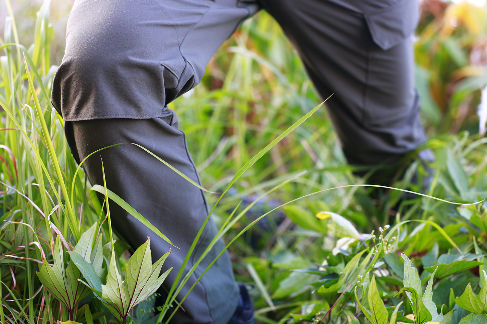
▲ TAKODA 登山褲之四向彈性布料和膝部立體活動剪裁設計
穿霧隘勇線
穿霧隘勇線則是從白布帆大橋南端的雙崎部落延伸到東勢小中嵙步道的稜線，這一帶山區的林相十分複雜，山坡地又多被開發為果園，因此行進起來必須克服各式各樣混亂的障礙。此時，TAKODA 登山褲的耐磨、抗撕裂和靈活的特性再度提供關鍵的幫助。
比方說穿越果園的時候，經常必須攀爬鐵網或圍籬，在跨越鐵網的同時，腿部很容易被鐵線的尖端勾到，或是和鐵桿有摩擦，TAKODA 登山褲可以提供相當有效的防護，並且也不容易因此產生破損。
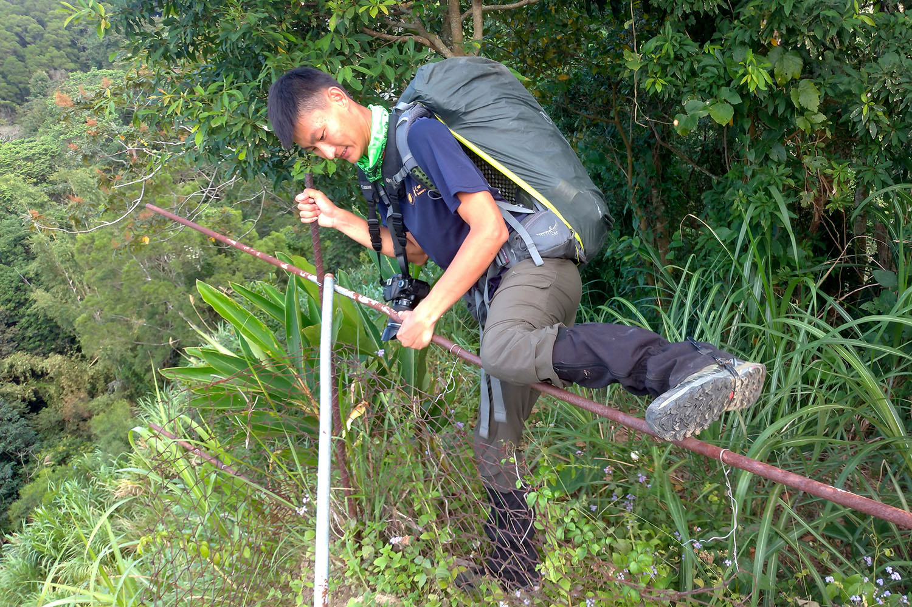
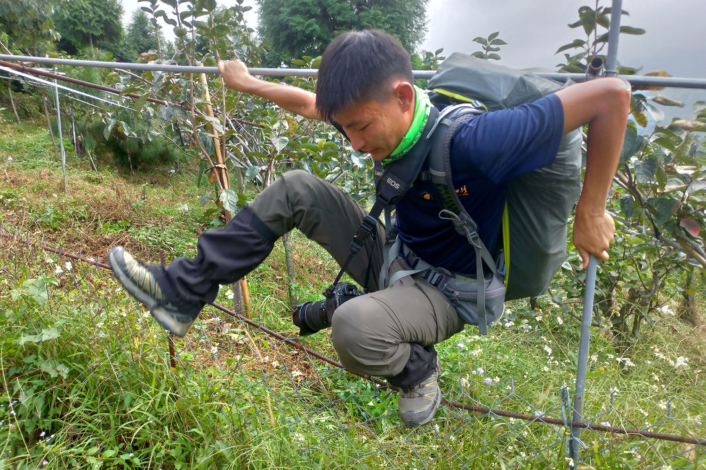
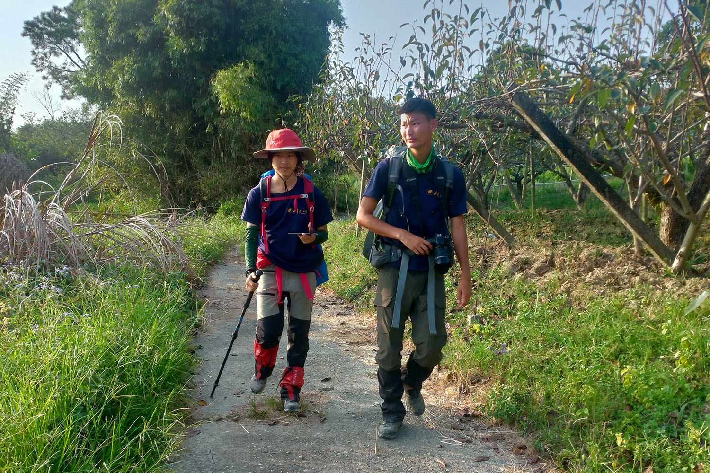
▲ 穿上 TAKODA 登山褲挑戰穿霧隘勇線（石恩 攝）
而在果園以外的區域，則充滿了各種帶刺植物，例如擬刺茄、懸鉤子、黃藤、大花咸豐草……等等，當我們在這些植物間行進時，衣物和皮膚都會因此遭受傷害，特別是一旦被黃藤的倒鉤給纏上，輕則衣服直接被割破，重則皮破血流、怵目驚心。這次穿著 TAKODA 登山褲，即使不幸被黃藤勾到，也不會刺到皮膚，褲子更不會因此而破裂，相當令人滿意。
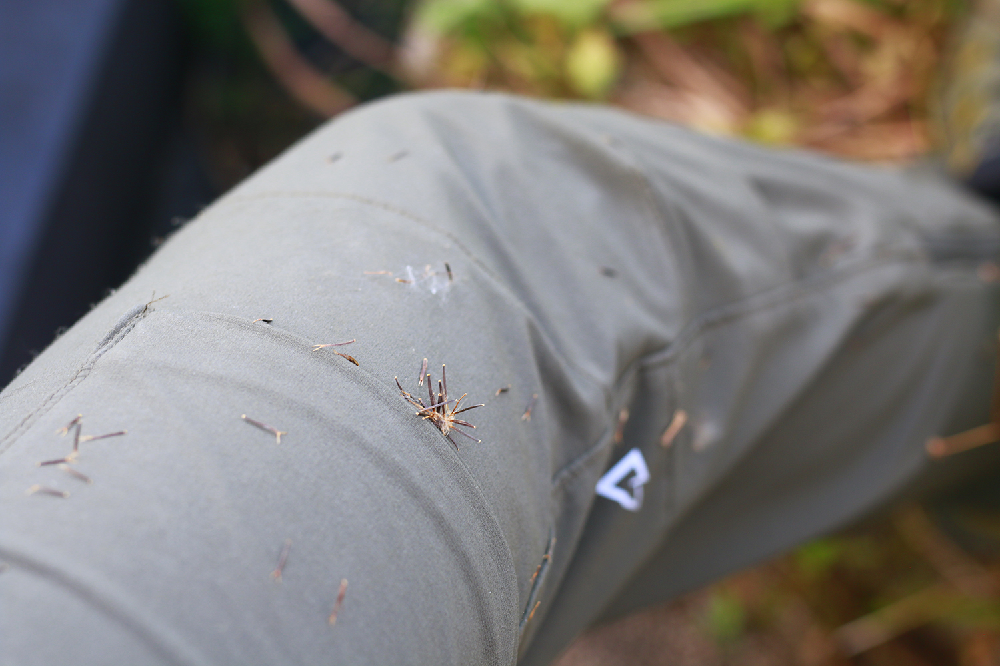
▲ 被大花咸豐草扎滿是穿霧隘勇線日常，但是不會痛
不同於白布帆產業道路，穿霧隘勇線還擁有茂密的亂竹林，當中有不少竹枝或前人開路所留下的尖銳斷面，都容易對人以及衣物產生嚴重傷害。我還記得有一次到牛稠尾山西稜的時候，因為路況比較原始，我特別穿了冬季的登山褲去，結果在一處落差下攀的時候被一根斷竹插到，褲子當場就被戳破一個洞。這一次在穿霧隘勇線中所遇到的斷竹和那次相比，兇猛程度有過之而無不及，而 TAKODA 登山褲都毫髮無傷，甚至連腳都只是感覺被碰了一下，防護能力可見一斑。
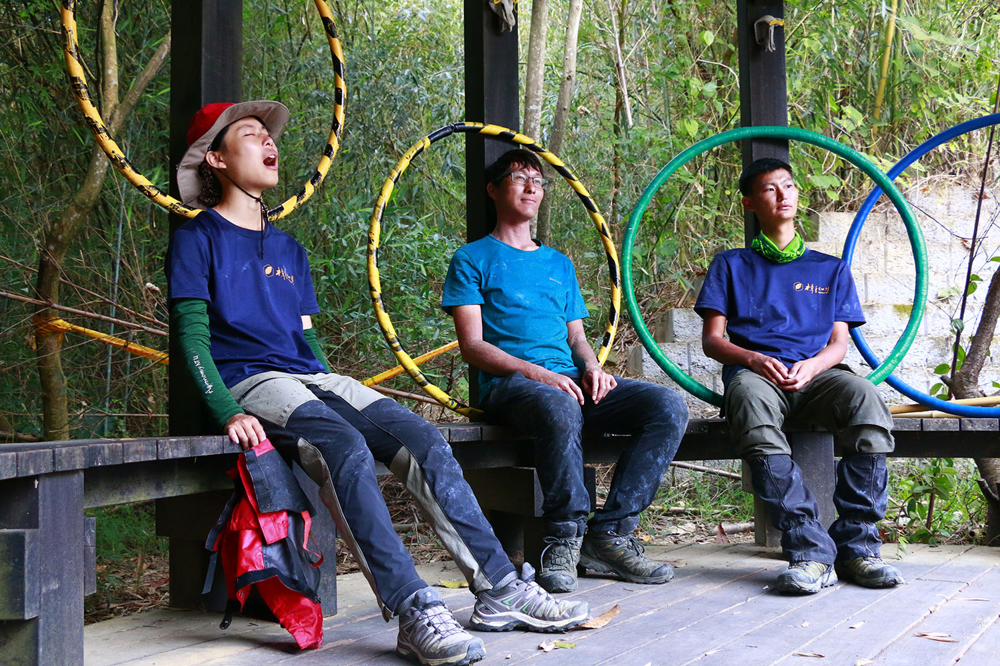
▲ 穿霧隘勇線困難重重，大家走完都顯得狼狽不堪
【什麼場合適合穿著 TAKODA 登山褲呢？】
TAKODA 登山褲擁有這麼強悍的防護力，但實際上它是一件薄薄的輕量化登山褲，不過也別小看它的厚度，他可是具有一定程度的的保暖功能。這次穿 TAKODA 登山褲到苗栗臺三線一帶健行，白天的時候還著實有點熱，畢竟是低海拔、三十幾度的晴天，但到了未及二十度的夜裡，野營時不需要套睡袋也不會覺得冷。
具有保暖能力的 TAKODA 登山褲更難能可貴的，是在保暖的功能發揮時，仍然保有不錯的透氣性，這次測試時不斷出汗的腿都能夠一直維持舒適，縱然無法一直保持乾燥，也不會連褲子一起濕透。
總結來說，這件褲子很適合在偏涼的秋冬低海拔、以及夏季高海拔穿著。至於如果非得像我這樣在炎熱的環境下穿的話，行走一般郊山安全路線時，可以將雙腿褲管的調節拉鍊拉起來，或甚至可以捲起來變成短褲或七分褲來穿，因為它褲管的地方有做開口式的拉鍊。
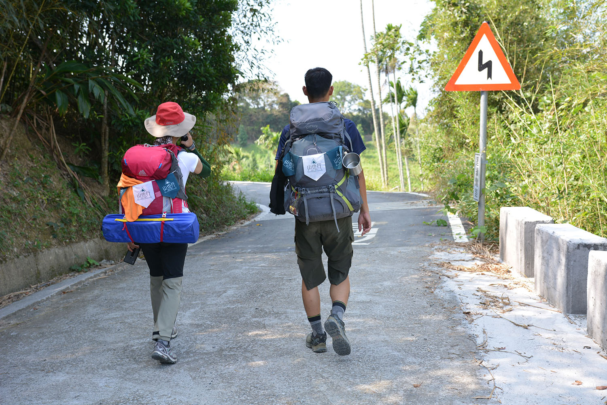
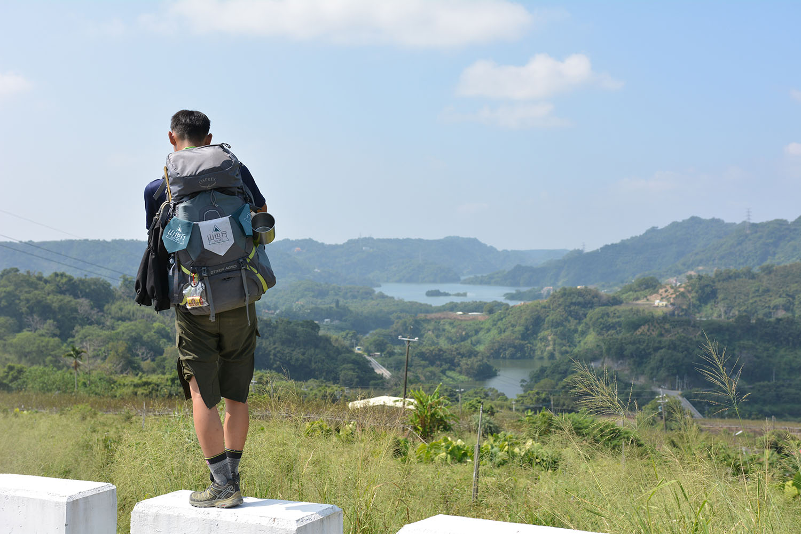
▲ 如果天氣熱，把褲管捲起來也很方便唷！（Alan 阿倫 攝）
事實上，TAKODA 登山褲穿起來相當舒服，就像平常穿的休閒褲一樣，所以要在日常生活中穿也完全沒有問題，多功能的口袋設計不論在登山或是日常都相當方便。
依照慣例，我們還是要給這件褲子作個總結並且給一些星星。
防水力：★★★★☆
這次很幸運地（還是很不幸呢？）在測試的過程中，全程都沒有遇到下雨，所以它的防水能力並沒有真正在野外被測試到。不過我們因為都在野外紮營的關係，早晨起來時難免會有露水凝結，TAKODA 登山褲不但內層完全乾爽，連外層都相當乾燥。有一次，我甚至不小心把飲料滴到褲子上，結果發現液體內聚成水滴，就像在蓮花表面一樣完全不會附著在布料上，這就是 DWR 的特性。但是如同前面所說，DWR 是一種消耗性的塗料，會隨著衣物洗滌的次數增加而產生耗損，因此 TAKODA 登山褲必須定期進行保養以維持它的防水性能。
透氣性：★★★☆☆
比起配備防水薄膜（如 GORE-TEX）的衣物來說，TAKODA 登山褲所使用的布料本質上透氣性是比較好的，然而由於使用 DWR 的緣故，透氣能力會有一定程度的下降。如果是在比較涼爽的環境如冬季或高海拔地區，TAKODA 登山褲的透氣表現會相當棒，而如果是像我們一樣在低海拔且炎熱的天氣裡穿的話，由於身體的排汗量比較大，也會散發出比較強的熱氣，透氣性就會稍嫌不足。幸好，TAKODA 登山褲擁有褲腳拉鍊的設計，可以讓使用者依照環境狀況來調整褲管的透氣性，甚至可以把整個褲管拉起來變成像短褲一樣，雖然不像兩節褲那樣可以直接把褲管拆掉，但對於腿部透氣性的調節仍然提供相當大的幫助。
舒適度：★★★★☆
TAKODA 登山褲的舒適度是無庸置疑的，在測試的這幾天，我都是直接穿著它睡覺。在戶外的時候，它防水與透氣的性能在某種程度上對於舒適感有所提升，不過這件褲子配備腰帶，並且使用到塑膠叉扣，因此在揹負具有腰封的背包時就會有互相卡到的現象。它的腰帶設計得不容易拆卸，對於解決這樣的困境就顯得不那麼友善了。
防護力：★★★★☆
這條褲子雖然薄薄一件，但防護能力是相當出色的，不但不怕磨、不怕刮，連斷竹刺到、黃藤勾到也不會破，皮膚也不會因此受傷，防護能力可謂具備相當水準。
靈活度：★★★★★
這件登山褲最令人驚豔的就是它的靈活度，這次去走地形複雜的白布帆產業道路和穿霧隘勇線，不論是高落差的上下攀、比較大的跨距、或是使用各種奇形怪狀的姿勢，褲管完全不會卡到、拉到或是摩擦到，這都要歸功於四面高彈性布料和立體活動剪裁的設計。我認為這件褲子給我的靈活感，和球褲、束褲和壓力褲是同樣等級的，基本上就像自己的皮膚一樣，絕對值得五顆星。
功能性：★★★★☆
口袋的數量與配置讓這件褲子的功能性大大增加，美中不足的另外則是褲管末端和鞋子之間沒有固定系統，因此在走比較荒僻的路時，尤其這次又是穿著短筒鞋前往，還是得借助綁腿來防止東西掉進鞋子裡，是一點小小的遺憾。另外，Takoda 登山褲的前襠拉鍊很長，解放的時候相當方便，著實是男性山友的福音呀！
【什麼場合適合穿著 TAKODA 登山褲呢？】
比起相同機能的登山褲動輒五千元，TAKODA 登山褲的價格可謂經濟實惠，物超所值也是擁有五顆星星的等級，而且有許多配色可以選擇，既實用又時尚的本土品牌不支持嗎？
我已經迫不及待再穿上它到山裡撒野了！
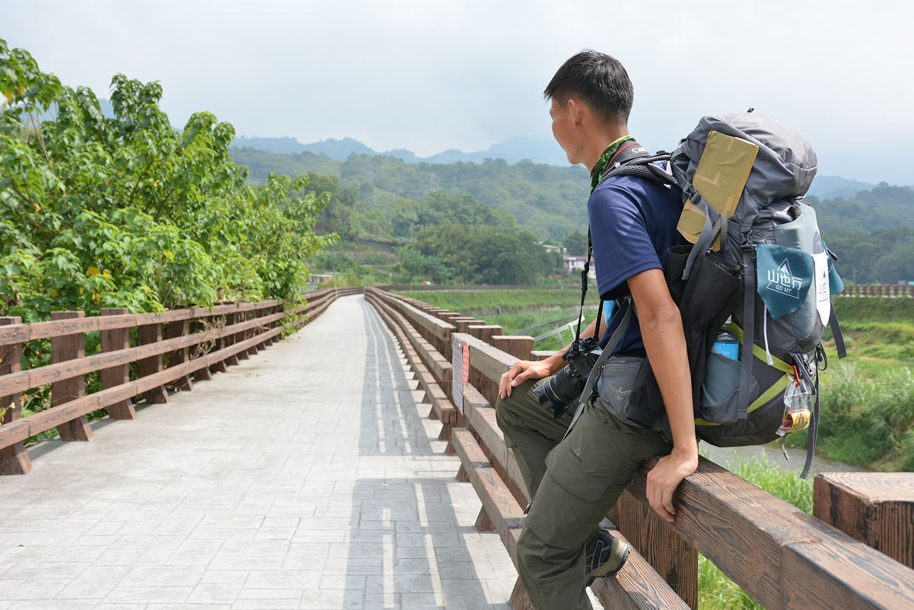
▲ 讓我們穿上 TAKODA 登山褲一起到山裡撒野吧！（Alan 阿倫 攝）
本文同步發表於健行筆記： ● 【褲測】TAKODA 登山褲 x 拓荒路線虐待實錄 更多故事請關注宇宙浪人工作室。 本產品由 TAKODA（川郡國際興業有限公司）提供。